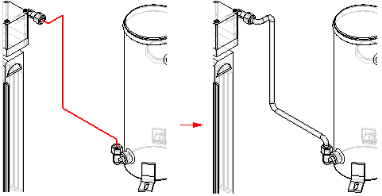

Tube command
Use the Tube command  to create a tube part that contains a tube feature derived from a selected path.
The path must be a contiguous set of end connected segments.
to create a tube part that contains a tube feature derived from a selected path.
The path must be a contiguous set of end connected segments.
Note:
To access the Tube command you must be in the XpresRoute environment.
Choose Tools tab→Environs group→XpresRoute .
